Подготовка к прохождению курса
Перед началом прохождения курса “Программирование для лингвистов” каждому студенту необходимо сделать несколько шагов, которые подготовят необходимые инструменты к дальнейшей работе.
Установка интерпретатора языка программирования Python
Чтобы установить интерпретатор языка программирования Python на свой компьютер, выполните следующие шаги:
Скачайте установочный файл для своей системы с официального сайта.
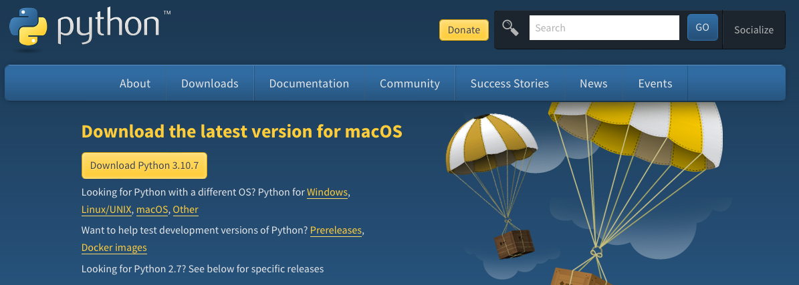
Important
Для скачивания нажмите кнопку Download Python 3.XX.XX.
Версия Python должна быть = 3.13!
Запустите установочный файл и следуйте указаниям по установке.
Проверьте корректность установки:
Откройте терминал и выполните следующую команду:
MacOS:
python3 --versionWindows:
python --version
Вы должны увидеть строку, похожую на следующую:
Python 3.13.11
Note
Если Вы не знаете, как открыть терминал, перейдите на шаг Как открыть терминал. Если у Вас возникли ошибки при работе с терминалом, обратитесь к часто задаваемым вопросам по работе с терминалом (FAQ). Если после настройки у Вас остались вопросы, обратитесь в чат курса.
Установка системы контроля версий Git
Чтобы установить систему контроля версий Git, выполните следующие шаги:
Скачайте установочный файл для своей системы с официального сайта:
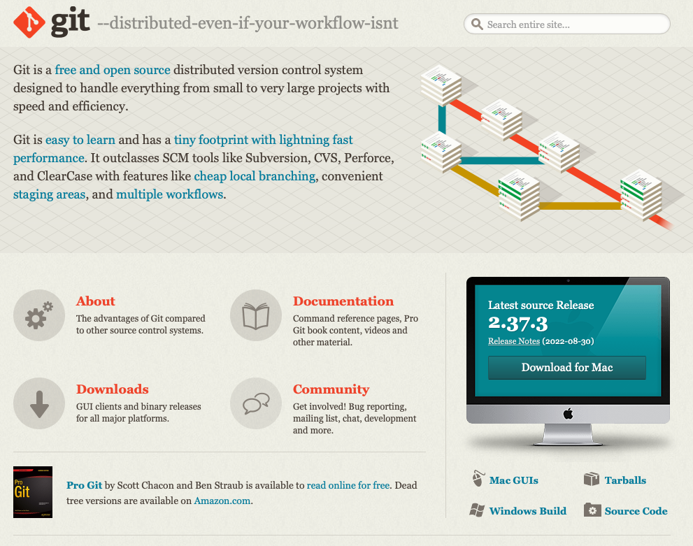
Important
Для скачивания нажмите кнопку Download for <название ОС>.
Запустите установочный файл и следуйте указаниям по установке
Проверьте корректность установки:
Откройте терминал и выполните следующую команду:
git
Вы должны увидеть строку, похожую на следующую:
usage: git ...
Note
Если Вы не знаете, как открыть терминал, перейдите на шаг Как открыть терминал. Если у Вас возникли ошибки при работе с терминалом, обратитесь к часто задаваемым вопросам по работе с терминалом (FAQ). Если после настройки у Вас остались вопросы, обратитесь в чат курса.
Установка среды разработки Visual Studio Code
Чтобы установить среду разработки Visual Studio Code, выполните следующие шаги:
Скачайте установочный файл для своей системы с официального сайта:
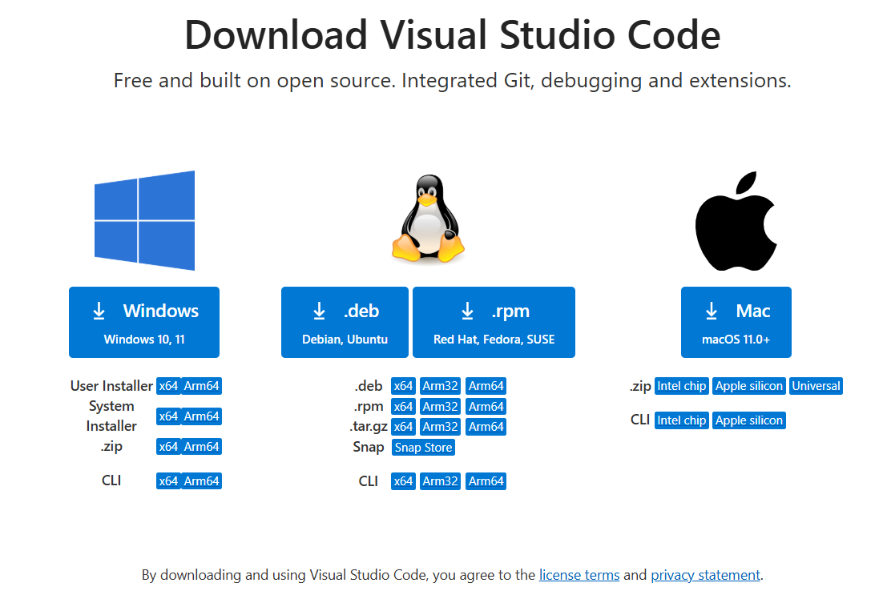
Запустите установочный файл и следуйте указаниям по установке.
Проверьте корректность установки:
Откройте Visual Studio Code из меню приложений.
Вы должны увидеть похожий интерфейс:
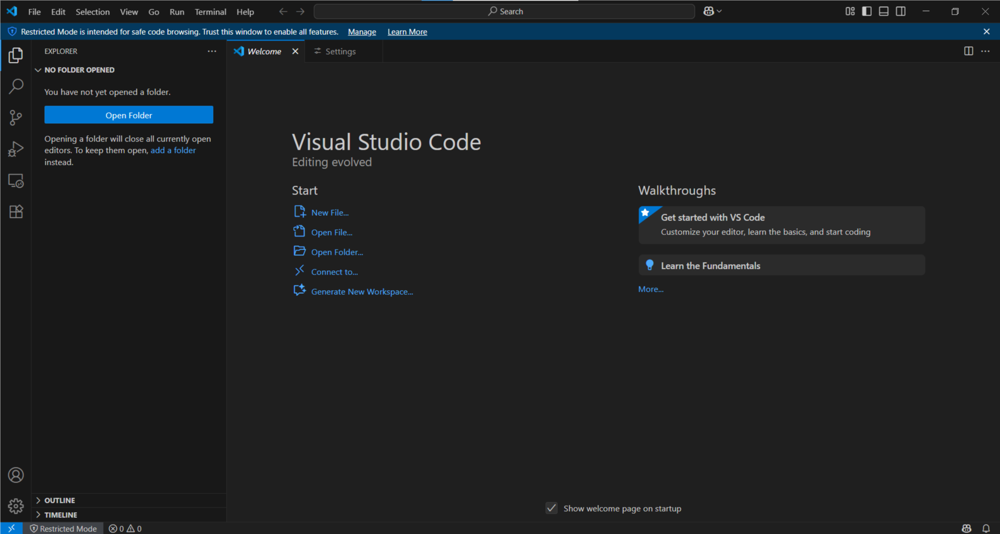
Регистрация на платформе GitHub
Чтобы зарегистрироваться на платформе GitHub, выполните следующие шаги:
Откройте главную страницу платформы.
В верхнем правом углу нажмите кнопку
Sign up: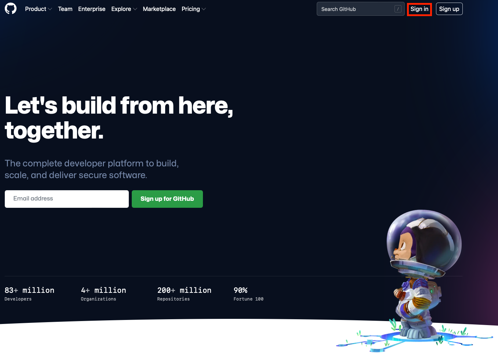
Пройдите регистрацию.
Note
Рекомендуется использовать личную почту, чтобы после окончания учёбы не пришлось менять почту с учебной на личную.
Note
Рекомендуется (но не обязательно) в качестве логина
использовать фамилию и имя. Пример: AndreiKashchikhin.
Создание форка репозитория
Чтобы создать форк репозитория на платформе GitHub, выполните следующие шаги:
Откройте сайт репозитория, который Вам прислал преподаватель.
В верхнем правом углу нажмите кнопку
Fork: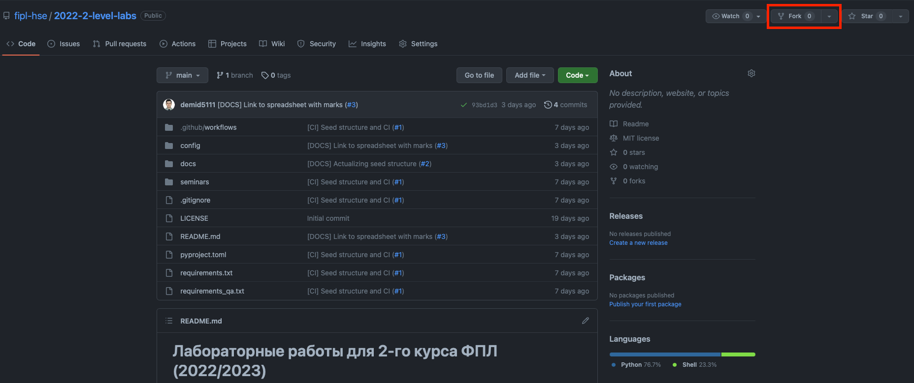
На открывшейся странице нажмите кнопку
Create Fork:
Форк создан. Обратите внимание на ссылку в адресной строке браузера: она будет содержать имя Вашего GitHub пользователя и название репозитория:
https://github.com/<имя-Вашего-пользователя>/202X-2-level-labs

Добавления менторов в коллабораторы
В Ваш форк можете вносить изменения только Вы. В процессе прохождения курса может возникнуть ситуация, когда ментору будет необходимо внести изменения в Ваш форк (обновить Ваш форк до состояния основного репозитория, разрешить конфликты и т.д.).
Чтобы у менторов была возможность вносить изменения в Ваш форк, их нужно добавить в коллабораторы. Для этого выполните следующие шаги:
Откройте сайт форка, который Вы создали на шаге Создание форка репозитория.
Important
Обратите внимание на ссылку в адресной строке браузера: она будет содержать имя Вашего GitHub пользователя и название репозитория.
Нажмите кнопку
Settings:
Слева выберите вкладку
Collaborators:
Нажмите кнопку
Add people:
В открывшемся окне введите имя GitHub пользователя ментора и выберите его из списка:
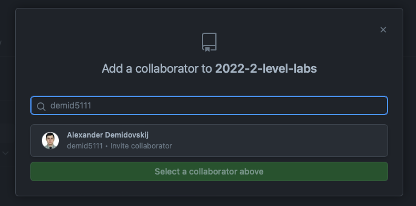
Нажмите кнопку
Add <имя-пользователя> to this repository:
Вы отправили запрос ментору на добавления в коллабораторы:

Проделайте шаги 4-7 для всех менторов курса. Точный список менторов уточняйте у преподавателей.
Important
Обязательно напишите в чат, если преподаватели не приняли Ваш запрос в течение нескольких дней.
Клонирование форка репозитория для локальной работы
Чтобы склонировать форк на Вашу систему, выполните следующие шаги:
Откройте сайт Вашего форка, который Вы создали на предыдущем шаге.
Нажмите кнопку
Code, выберитеHTTPSи нажмите кнопку копирования:
Откройте терминал и перейдите в удобную папку:
Чтобы переходить из папки в папку в терминале, используйте команду
cd <название-папки>.Пример:
cd work.
Выполните следующую команду для клонирования репозитория:
git clone <ссылка-на-ваш-форк>Пример:
git clone https://github.com/sofianurtdinova/2023-2-level-labs
Important
Ссылку на форк Вы скопировали ранее на шаге №2.
Note
Если Вы не знаете, как открыть терминал, перейдите на шаг Как открыть терминал. Если у Вас возникли ошибки при работе с терминалом, обратитесь к часто задаваемым вопросам по работе с терминалом (FAQ). Если после настройки у Вас остались вопросы, обратитесь в чат курса.
Создание проекта в среде разработки Visual Studio Code
Чтобы создать проект и работать с Вашим форком в среде разработки Visual Studio Code, выполните следующие шаги:
Откройте Visual Studio Code и нажмите кнопку
Open:
В открывшемся окне выберите папку с форком, который Вы склонировали на шаге Клонирование форка репозитория для локальной работы:

Note
На скриншоте выше показано, что форк был склонирован в
папку Desktop (Рабочий стол).
Important
Нужно выбрать именно папку с форком, имеющую
название 202X-2-level-labs, а не папку с конкретной
лабораторной работой.
В открывшемся окне нажмите кнопку
Yes, I trust the authors:
Проект создан, слева Вы можете увидеть файлы проекта:

Удостоверьтесь, что у Вас установлено расширение Python.
Перейдите во вкладку Extensions в левой боковой панели (
Ctrl+Shift+X). Введите id расширения в поисковую строку. Нужное нам — ms-python.python. Нажмите Install.Для создания виртуального окружения откройте терминал (Terminal -> New Terminal в верхней панели или сочетание клавиш
Ctrl + `) и введите следующую команду:python -m venv venv
Это также можно сделать в командной панели.
Откройте командную панель с помощью значка настроек
 в левом нижнем углу или сочетанием клавиш
в левом нижнем углу или сочетанием клавиш Ctrl + Shift + P:
Введите
Python: Create Environment.Выберите
Venv.Выберите путь к нужному интерпретатору (обратите внимание, чтобы версия Python в выбранном интерпретаторе была подходящей для курса).
Если интерпретатор Python не найден, обратитесь к инструкции по настройке переменных
PathиPYTHONPATHProviding PYTHONPATH on Windows, и затем попробуйте выбрать интерпретатор заново.
Выполните в терминале команду активации виртуального окружения.
Для macOS:
.\venv\Scripts\activateДля Windows:
.\venv\Scripts\activate
После успешной активации в начале строки появится метка (venv), а в правом левом углу при любом открытом .py файле появится значок с названием виртуального окружения и версией Python. При наведении мышки будет показан путь до интерпретатора.
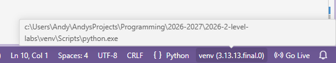
Для корректной работы с пользовательскими модулями виртуальное окружение должно содержать нужные библиотеки.
Текущие загруженные модули хранятся в
venv/Lib/site-packages(Windows) илиvenv/lib/<python-version>/site-packages(macOS).В рамках курсов по програмированию все необходимые зависимости хранятся в файлах
requirements.txtиrequirements_qa.txt. В дальнейшем если в лабораторной работе Вас попросят использовать внешнюю библиотеку, Вам следует добавить её вrequirements.txtи установить зависимости заново.Установите зависимости с помощью команды:
python -m pip install -r requirements_qa.txt -r requirements.txt
Вы готовы приступить к работе.
Attention
В Visual Studio Code изменения в файлах не сохраняются автоматически,
но доступно автосохранение файлов.
Чтобы его включить, выберите в левом верхнем углу
File -> Auto Save. Для
выбора режима необходимо настраивать автосохранение.
Для этого нажмите сочетание клавиш Ctrl + ,
или значок настроек в левом нижнем углу -> Settings -> в поисковой
строке вбейте Auto save,
после чего выберите один из доступных режимов.
Подробнее о них можно почитать в официальной
документации Visual Studio Code
Изменение исходного кода и отправка изменений в удалённый форк
Основную работу Вы будете вести в файле main.py в папке с каждой
лабораторной работой.
Процесс выглядит следующим образом:
Вы изменяете исходный код в файле
main.py.Вы фиксируете изменения с помощью системы контроля версий
git.Вы отправляете изменения в удалённый форк.
Далее будет пример этого процесса.
Изменение исходного кода
По умолчанию функции не имеют внутри себя реализации. Ваша задача - реализовать функцию по предоставленному описанию лабораторной работы.
Фиксация изменений с помощью системы контроля версий git
Git — система контроля версий, которая позволяет сразу нескольким разработчикам сохранять и отслеживать изменения в файлах проекта.
Сейчас мы зафиксируем изменения, сделанные на предыдущем шаге в файле
main.py. Чтобы это сделать, выполните следующие шаги.
Фиксация изменений через терминал
Откройте терминал в среде разработки Visual Studio Code нажатием кнопки Terminal -> New Terminal в верхней панели или сочетанием клавиш
Ctrl + `:

В терминале выполните команду
git add <путь-до-лабораторной-работы>/main.py:
Если Вы хотите зафиксировать все изменённые файлы, замените путь до
main.pyна точку:git add .. Однако будьте аккуратны с тем, какие файлы вы фиксируете.В терминале выполните команду
git commit -m "message":
Note
В качестве message рекомендуется использовать краткое
описание тех изменений, которые Вы сделали. Этот текст будет
публично доступен!
Больше информации о командах, описанных выше, можно найти в официальной документации по Git.
Альтернативный способ зафиксировать изменения
Можно также воспользоваться вкладкой Source Control Visual Studio Code.
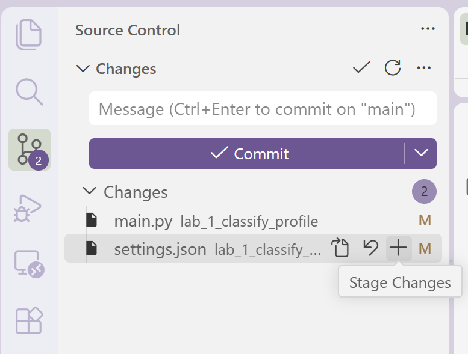
Здесь с помощью кнопки + Вы можете зафиксировать все нужные файлы.
Они переместятся из вкладки Changes во вкладку Staged Changes
(если после этого Вы добавили новые изменения в те же самые файлы,
их также придётся добавить).
Затем введите сообщение коммита и нажмите кнопку Commit
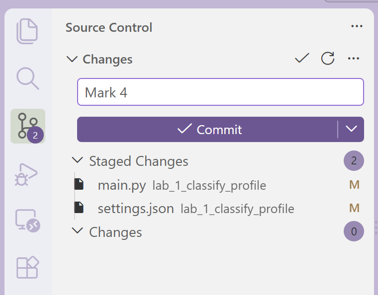
Отправка изменений в удалённый форк
После предыдущего шага изменения находятся в состоянии зафиксированных. Они сохранены только у Вас в системе. Чтобы отправить их в удалённый (находящийся на платформе GitHub) форк, созданный ранее, выполните следующие шаги.
Отправка изменений в удалённый форк через терминал
Откройте терминал в среде разработки Visual Studio Code.
В терминале выполните команду
git pull.Это нужно делать каждый раз, когда преподаватели обновляют Ваш форк.
В терминале выполните команду
git push:
Откройте главную страницу Вашего форка. Вы увидите сделанный commit и сообщение, которое Вы написали:

Больше информации о командах, описанных выше, можно найти в официальной документации по Git.
Альтернативный способ отправить изменения в удалённый форк
Альтернативный способ отправления изменений в удалённый форк — воспользоваться
вкладкой Source Control Visual Studio Code.
После сохранения коммита нажмите на кнопку Sync Changes (number of commits).
Кнопка синхронизации покажет, сколько входящих коммитов (тех, что Вы принимаете
с помощью git pull — стрелка вниз) и Ваших исходящих коммитов (стрелка вверх)
будет синхронизировано.
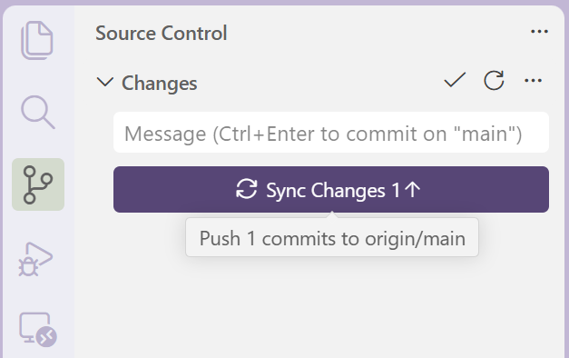
Вы можете сделать git pull через Source Control, нажав соответствующую
кнопку в блоке More Actions (три точки на строке блока Changes).
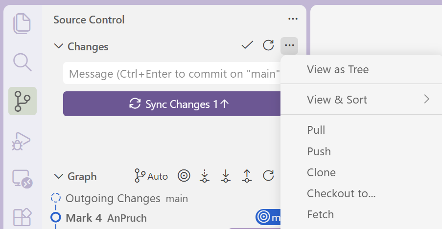
Во вкладке Graph все коммиты, сохранённые локально, будут отмечены названием
ветки (main в данном случае), а все коммиты, отправленные в удалённый репозиторий,
будут иметь вид origin/<название-ветки>.
Конфликты
Если у Вас были входящие коммиты, у Вас могут образоваться конфликты. Если Вы не знаете, как решать конфликты, обратитесь в чат за помощью.
Указание origin для git push
Когда Вы делате git pull/push в первый раз, Вам может понадобиться настроить
то, куда Вы отправляете изменения и откуда принимаете их.
Убедитесь, что при запуске команды git remote -v
Ваш вывод выглядит следующим образом: origin — Ваш форк, а upstream — основной
репозиторий.
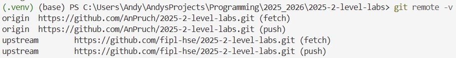
Если что-то выглядит иначе, выполните команду добавления соответствующего репозитория:
git remote add upstream <ссылка-на-главный-репозиторий>
git remote add origin <ссылка-на-Ваш-форк>
Выполение git push через Source Control может также потребовать
настройки того, куда Вы отправляете изменения.
Кнопка Sync Changes будет выглядеть как Publish Branch.
Вам нужно будет указать origin — ссылку на Ваш форк.
Авторизация на шаге git push
Если для выполнения git push VSCode требует от Вас авторизироваться,
в качестве имени и почты введите Ваше имя или ник на GitHub и почту, с
помощью которой Вы регистрировались на GitHub.
git config --global user.name "Your Name"
git config --global user.email your-e-mail@example.com
Если у Вас запрашивают пароль, это не пароль от GitHub. Вам необходимо сгенерировать Personal Access Token на GitHub.
Для этого перейдите в настройки и внизу страницы в левом блоке найдите раздел
Developer settings.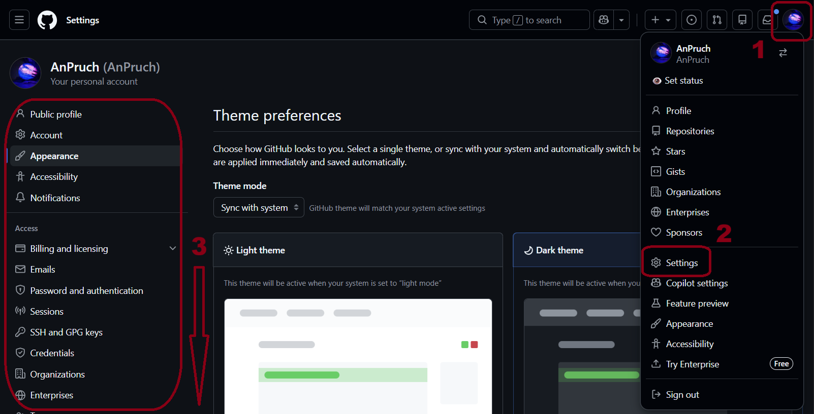
Выберите тип токена для генерации (classic):
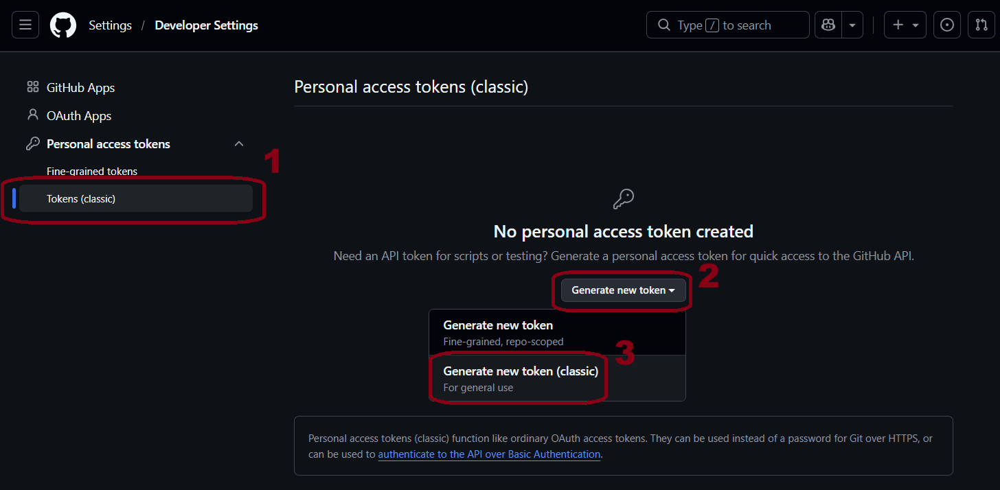
3. Введите название для PAT в поле Note (1), выберите Expiration (2), поставьте галочку слева от настроек repo (3), workflow (4), gist (5):
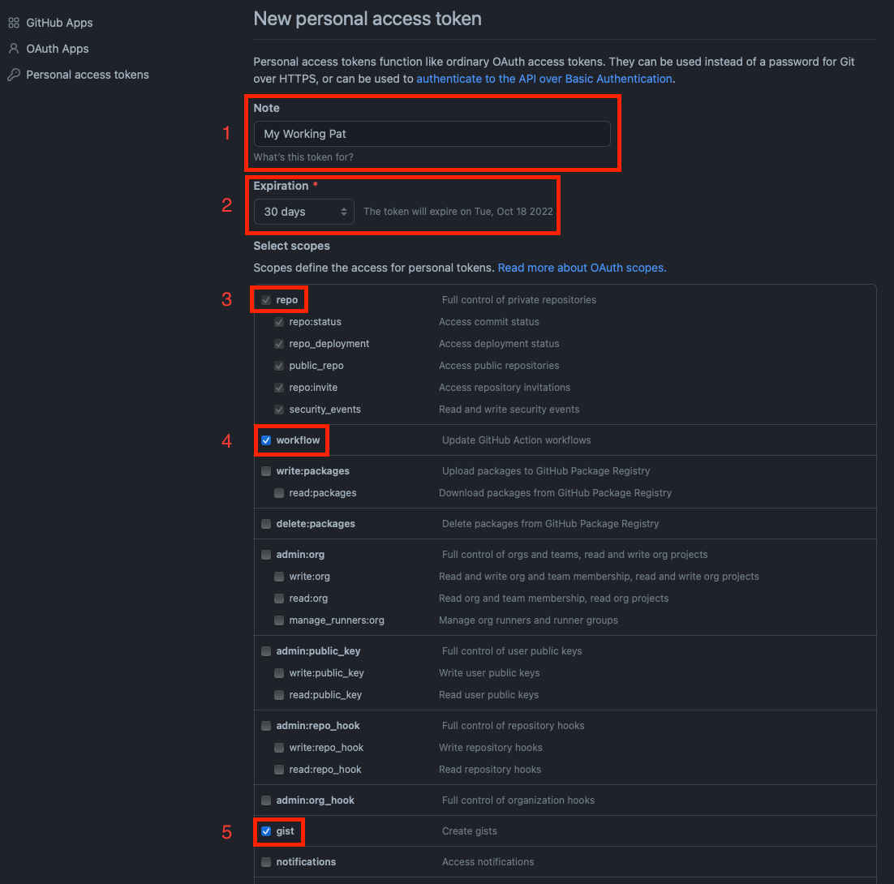
Внизу страницы нажмите кнопку
Generate token.Нажмите кнопку копирования, чтобы перенести токен в буфер обмена:
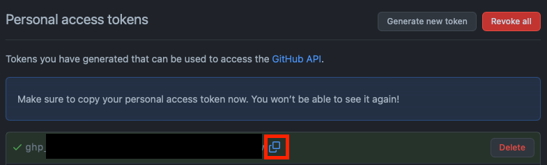
Important
Обязательно сохраните этот токен! Его нельзя будет увидеть снова — только сгенерировать новый.
Вставьте сохранённый токен в поле, требующее пароля (
ctrl+Vили кликом правой клавиши мыши).
Создание Pull Request
Чтобы менторы смогли увидеть Ваши изменения и сделать проверку, Вам нужно создать Pull Request на платформе GitHub. Для этого выполните следующие шаги:
Откройте сайт репозитория, который Вам прислал преподаватель.
Выберите вкладку Pull Requests:

Нажмите кнопку
New pull request:
Нажмите кнопку
compare across forks:
Нажмите
head repositoryи из списка выберите Ваш форк (он будет содержать имя Вашего пользователя):
Нажмите кнопку
Create pull request:
Введите название для Pull Request:

Important
Имя PR должно соответствовать следующему шаблону:
Laboratory work #X, Name Surname - 2XFPLX.
Нажмите
Assigneesи из списка выберите ментора, который указан в таблице успеваемости:
Учтите, что для выставления
Assigneesможет понадобится дождаться, когда Вас добавят в команду курса. О сроках напишут преподаватели, а приглашение придёт на почту, с которой Вы регистрировались на GitHub. Если Вы ещё не приняли приглашение, создавайте форк безAssignees— это поле можно будет заполнить позже.Нажмите кнопку
Create pull request: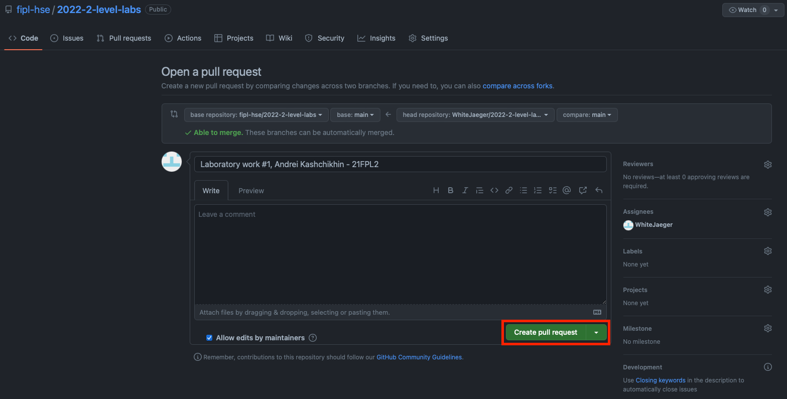
Note
Pull Request появится в списке PR, который находится на странице из шага №2.
Продолжение работы
Продолжение работы заключается в повторении нескольких шагов:
Вы отправляете изменения в удалённый форк.
Они автоматически будут обновляться и в Pull Request, который Вы создали.
Ментор проверяет Ваш код и оставляет комментарии.
Вы исправляете исходный код согласно комментариям.
См. шаг №2.